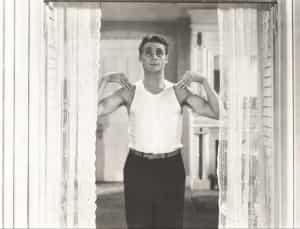

Sponsored Article is ROK's official account that publishes sponsored articles from advertisers. If you are interested hiring a sponsored article for your site, product, or service, visit our advertising page.


The following article was sponsored by Henry Tran.
[Editor’s Note: Henry paid for the first 100 readers to receive a free gift. Check out his links to learn more.]
Hey man, Henry Tran here. I’m the new trainer on the most subscribed fitness channel on YouTube.
As you know, testosterone is the hormone that literally separates you from a women. It’s also the #1 reason why guys can build pure, ripped muscles easier than your female companion.
And high levels of testosterone makes it easier to burn fat more quickly, makes you more attractive to women, builds an “alpha male” physique (which gets you more respect from guys), and the fun part… pumps up your sex life.
That’s why I put together this 5 second testosterone test that you can do RIGHT NOW to determine if your test levels are HIGH or LOW.
All you need is a mirror. Ready?
First, take off your shirt and stand in front of the mirror and take a deep, honest look at yourself.
One of the first things you may notice (and a BIG indicator in Low-T levels) is that you may have excessive belly fat around your midsection.
And if you do, accept right now that this extra belly fat is not your fault. If you have low testosterone levels, losing fat around your midsection is nearly impossible, no matter how you little you eat or how much you exercise.
In fact, published studies have shown that low testosterone and belly fat reinforce each other, trapping men in a spiral of weight gain and hormonal imbalances. The next thing I want you to do in this test is examine your jaw-line.
Testosterone has been strongly linked to increased bone density and growth… and this is especially seen on your jawbone, where high test levels will widen your jaw and create those sharp edges.
Which is another reason that women have more feminine features men have more masculine facial traits.
After you determine if you have a strong jawline or not, take a look at your shoulders.

Like I said above, testosterone affects bone growth and maturation. So along with strong facial bones, you will also have either strong or weak (narrow) shoulders if your T-Levels are low.
Now, don’t worry because even if you are suffering from LOW T – I’m going to show you a solution.
One more thing before we get going…
If you are still unsure if you have Low-T or High-T, I’ve put together a list of signs you need to look out for.
If these are just beginning or already dominant in your life, it’s probably not your fault at all. There are several “environmental aggressions” that can cause your testosterone to drop without you even knowing it. And these are things that can hurt you, without you knowing it…
1) Sexual Decline – Testosterone plays a MAJOR role in how high or low your libido is, so low levels can cause you to have less of a desire to have sex for pleasure. And it can also completely shut down your sexual encounters.
2) Erectile Destruction – Or as I call it, “A Broken Man.” When you don’t have enough testosterone in your body, your brain can’t signal that certain male part to perform.
3) Sperm Challenged – Low test equals less sperm… bottom line.
4 Energy Decrease – So guys who have low T have reported that their energy levels have dropped as well. This can make it extremely difficult to workout… even if you want to.
5) Muscle Deterioration – Testosterone levels determine how much strength and muscle your body has, so low levels means less muscle mass and the potential to lose muscle.
6) Rising Body Fat – This is problematic for a lot of guys because more fat causes you to produce less testosterone, and less testosterone causes you to burn less fat. It is a vicious cycle.
7) Dramatic Mood Changes – Having low testosterone is the MALE equivalent of experiencing menopause for a women. It can mess with your focus, your emotions and even lead to depression.
So if you failed the high testosterone test, or if you have any of the above signs, then you need to make some changes ASAP. However, here is how you can Stop The Low-T Cycle (boost testosterone 24/7).
Low testosterone is a vicious cycle that continues to drop and drop. It starts in your late 20s… roughly dropping 2% each year… which may not seem like much, but by the time you hit your 40s, your T-Levels PLUMMET an additional 40%.
That means by the time you are in your 40s, you have less than half the testosterone production than you did in your 20s.
But as I mentioned before, it’s not too late to stop these vicious side effects from messing with your body and your potential to be the best form of a man you can be!
By taking control of your master male hormone and getting the deep restful sleep your body needs to optimize its hormone production, you’ll boost your testosterone 24 hours a day.
– That means 24 hours of fat burning
– 24 hours of getting ripped
– 24 hours of a more pumped up sex life
– 24 hours of women being more attracted to you
– 24 hours of you being more confident and demanding respect
– 24 hours of being an Alpha Male
Take back control of your manhood,
Henry Tran
P.S. Don’t forget to claim your free bonus gift (first 100 readers only)